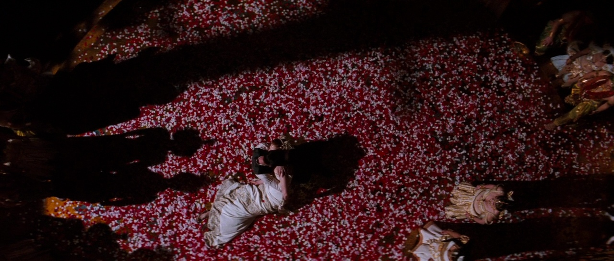

Martin Scorsese
Denis Villeneuve
Alfred Hitchcock
Fernando Meirelles
Esses filmes e muitos outros conseguem usar a cor além da estética. No cinema, a cor ajuda a construir o personagem e todo o entorno em volta da história, de forma que envolve quem assiste.
Aqui você pode continuar o conteúdo do site: explicar o tema, citar o artigo de base ou apresentar os próximos filmes.
O cinema propriamente dito surgiu pelos irmãos franceses Lumiére, que criaram um
cinematógrafo que dava ideia de uma imagem em movimento projetada para o público, cujo
funcionamento era manual. Eles faziam filmes mostrando imagens, como a de um trem
chegando a uma estação (A Chegada do Trem na Estação) ou filmando paisagens. Até que
George Meilés começou a criar filmes contando histórias de literaturas que prenderam a
atenção dos espectadores do cinema (Viagem à Lua).
Os primeiros filmes coloridos, feitos por Méliès, Pathé e Gaumont, foram feitos
pintados por operários à mão no princípio, mas era muito trabalhoso conforme os filmes
foram ficando maiores (DALPIZZOLO, 2007). Havia um método chamado Tintagens, que a
película era tingida de cores uniformes, com estas cores simbolizando várias funções, como: o
azul indicava a noite, o verde mostrava as paisagens e o vermelho era utilizado para incêndios. Posteriormente, eram utilizados filtros coloridos, em que cada cena era filmada
várias vezes com diferentes filtros, formando imagens bicolores.
Nos anos 1930, criou-se a empresa Technicolor, que inventaram uma película que
tinha três cores, estas primárias, dando maior realismo nos filmes. O primeiro filme a ser
lançado pela Technicolor foi Vaidade e Beleza de Rouben Mamoulian, em 1935. Houve um
receio dos espectadores de que as cores roubariam suas atenções em relação ao enredo e aos
atores dos filmes. Eles, no início, não acreditavam que as cores seriam mais um complemento
narrativo para o cinema.
Nas décadas de 1940 e 1950, os filmes que mais impressionavam em destaque nas
cores eram os musicais, que mostravam além de suas coreografias, cores vibrantes e
marcantes. O incentivo do uso da cor no processo cinematográfico foi graças às premiações
nos grandes festivais de cinema.
A cor no cinema começou a ser utilizada tão intensamente que foram retratando os
sentimentos e as personalidades dos personagens pela cor, como em Moulin Rouge que
utilizavam o vermelho para indicar paixão. (BUNGARTEN, 2004).
